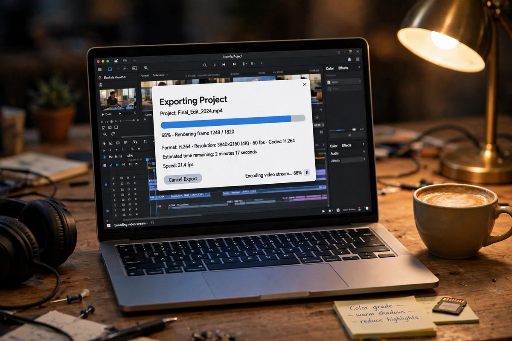
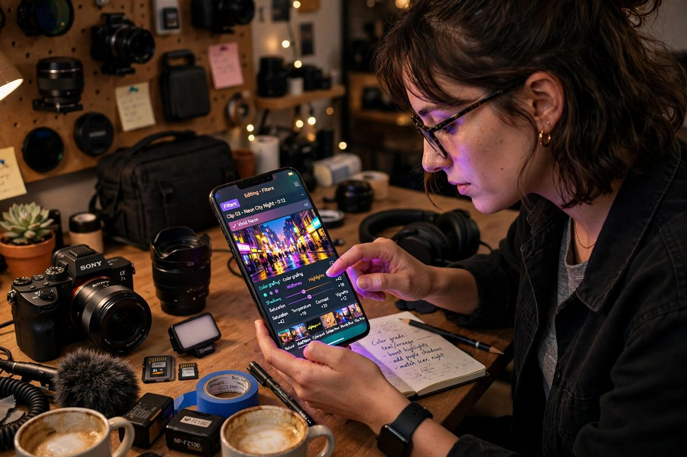

Keyframe Animation in CapCut

Keyframes are the secret behind every smooth zoom, moving text and animated sticker you see on TikTok. They sound technical, but the idea is simple — and this tutorial walks through it step by step.
What a keyframe actually is
A keyframe is a marker that says "at this moment, this thing should look like this". Put one keyframe at the start of a clip with a photo small and in the corner, and a second keyframe at the end with the photo large and centred, and CapCut animates the photo smoothly between the two. That is all keyframes are: snapshots of position, size, rotation or opacity at chosen moments, with the app filling in the movement between them. Every professional animation — a slow zoom into a face, text sliding in from the side, a sticker bouncing — is built from keyframes.
Your first keyframe: a slow zoom
Import a photo into a new project and place it on the timeline. Tap the photo, then tap the diamond-shaped keyframe button — a keyframe appears at the playhead. Move the playhead to the end of the photo, tap the keyframe button again, and pinch to zoom the photo in slightly. Play it back: the photo now zooms in slowly over its whole duration. That gentle push-in is called the Ken Burns effect, and it turns a still photo into a video clip. Keep the zoom small — 10 to 20 percent — because a huge zoom looks frantic.
Moving text and stickers
Keyframes work on text and stickers too, which is how creators make captions slide in, prices pop up, and arrows point at things. Add a text layer, place it off-screen to the left, and add a keyframe. Move the playhead half a second forward, add another keyframe, and drag the text to its final position. The text now slides in smoothly. Add a third keyframe at the end and move the text slightly upward for a gentle float. Two or three keyframes per element is usually enough; more keyframes mean more control, but also more chances for jerky movement.
Rotation and opacity
Position and scale are the most used keyframe properties, but rotation and opacity matter too. A slow rotation — from minus 3 degrees to plus 3 degrees over a clip — adds a handheld camera feel. Fading opacity from 0 to 100 at the start of a clip is a cleaner entrance than any transition effect. To change opacity, select the clip, open the opacity control, and keyframe it the same way: a keyframe at 0 percent, another at 100 percent a second later. Combine a fade with a small zoom and you have a professional-looking intro in under a minute.
Making movement feel smooth
Beginners' keyframe animations often feel robotic because the movement is perfectly even. Real cameras ease in and out — they start slow, speed up, then slow down again. CapCut lets you change the curve between keyframes: select a keyframe and look for the curve or easing options, and choose "ease in-out" for the most natural feel. Also, keep distances small and durations long. A text box moving across the whole screen in half a second looks like a glitch; the same move over two seconds looks deliberate and smooth.
Common keyframe mistakes
Three mistakes ruin most keyframe animations. First, too many keyframes: every extra keyframe is a chance for a wobble, so use the fewest that get the job done. Second, keyframes too close together, which creates sudden jumps — spread them out. Third, animating everything at once: if the photo zooms, the text slides and the sticker spins all at the same time, the viewer does not know where to look. Animate one thing at a time and let the rest stay still. If your animation looks wrong, delete the middle keyframes first — the problem is usually there.
Frequently asked questions
Do keyframes work in the free version?
Yes. Keyframe animation is a core feature and is fully included in the free version of CapCut.
Why does my keyframe animation look choppy?
Usually the keyframes are too close together or the movement is too big. Spread the keyframes apart, shrink the distance, and use ease in-out.
Can I copy keyframes to another clip?
You can copy a clip with its keyframes and paste it, then swap the media. The animation timing and movement carry over.
Download CapCut — official app
Get the real CapCut free from your official app store. No modified files, no risk.
Try the tools
Aspect Ratio Calculator
Presets for TikTok, Reels, Shorts and YouTube. Enter one side and get the matching resolution instantly.
Bitrate & Export Size Calculator
Work out how big your exported video will be from its length and bitrate — or the bitrate for a target size.
Caption Timing Helper
Paste your script and split it into timed caption lines with start and end timestamps, ready to use.
Template Idea Generator
Pick a niche and a mood and get a complete edit idea: hook, style, transitions and music vibe.
More guides
 What Is CapCut Mod APK?
What Is CapCut Mod APK? CapCut Premium vs Free
CapCut Premium vs Free Is CapCut Mod APK Safe?
Is CapCut Mod APK Safe? How to Install CapCut Officially
How to Install CapCut Officially Best CapCut Templates in 2026
Best CapCut Templates in 2026 Auto Captions in CapCut
Auto Captions in CapCut CapCut Transitions Tutorial
CapCut Transitions Tutorial Best Video Quality Settings
Best Video Quality Settings
Best Export Settings in CapCut CapCut for TikTok
CapCut for TikTok CapCut for Instagram Reels
CapCut for Instagram Reels Text Effects in CapCut
Text Effects in CapCut Background Removal in CapCut
Background Removal in CapCut Speed Ramping in CapCut
Speed Ramping in CapCut
Filters and Effects in CapCut Audio Editing in CapCut
Audio Editing in CapCut CapCut vs KineMaster
CapCut vs KineMaster CapCut for Beginners
CapCut for Beginners Trending Edits Tutorial
Trending Edits Tutorial